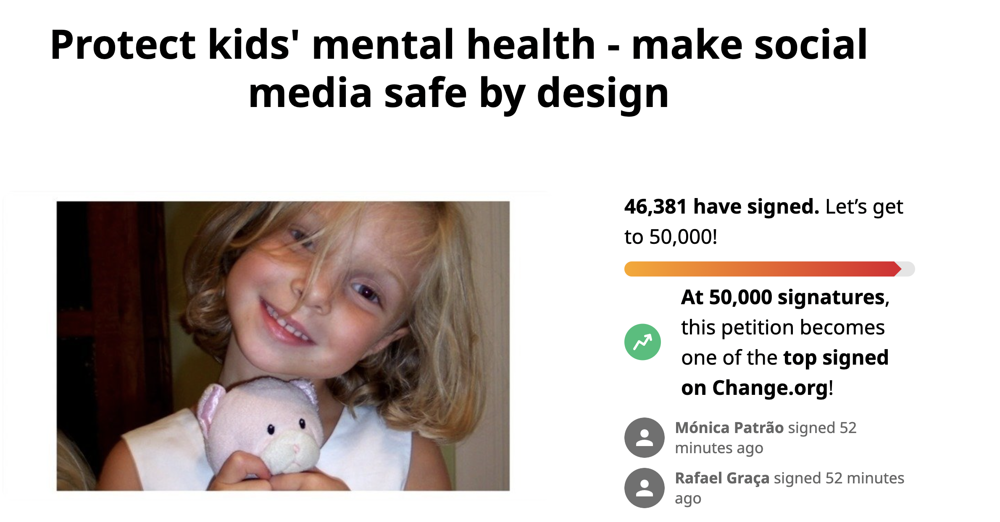

"With many people decided to take a social media detox, or quit social media all together. But what is the path forward in the new age of social media, and the side effects of the rapid evolution of the technology and the algorithms that control how we interact with the platform? Is it as simple as turning off big tech, or perhaps to quit social media? Or is there a way we can start to take control our use to find a healthy balance for social media and mental health?"
Why teens are more susceptible to the addictive features of social media and how parents and guardians can help adolescents develop a healthy relationship with social media.
Click here to learn more.
"While companies like Facebook push the narrative that its platform is intended to bring people together, many consumers fear that teenagers — who spend more time on social media as a whole and tend to be more impressionable — are absorbing the negative effects instead. It turns out a number of American teenagers agree.""
Click here to learn more.
"Social Media is starting to change the way our brain works and our body functions, it is starting to create psychological addictions that have affects on the brain similar to the ones of doing hard drugs. Additional negative sideaffects include a lesser ability to multitask, phantom "iches" that feel like a phone buzzing, dopamine rewards the brain sends because of social media usage, and also increased social network sizes in human users."

"Over 8 in 10 youth mental health specialists say social media is fuelling a mental health crisis among young people. More than 50% of kids say social media makes them and their peers feel anxious. And mental health specialists say exposure to harmful beauty content on social media can lead to physical consequences like disordered eating or self-harm."
Click here to learn more.